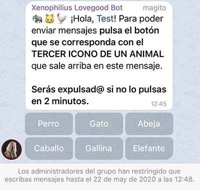

Grupo de ayuda: enlace
La funcionalidad principal disponible en grupos y por privados es un listado de eventos el cual se puede pedir con el comando /eventos o escribiendo listado de eventos.
Canales de eventos:
Xenophilius Lovegood Bot responderá a diversas frases como por ejemplo:
En el futuro se añadirán comandos.
Para acceder a los ajustes del bot pon el comando /setting@XenophiliusLovegoodBot.
Permite activar o desactivar el bot. Cuando está desactivado se mantiene activo lo siguiente:
Para activar o desactivar la opción de comandos.
Si se activa esta opción, Xenophilius Lovegood Bot borrará mensajes del estilo "alguién más se apunta", "si va más gente me apunto", "estoy por apuntarme a", etc.
Con esta opción se borrarán los mensajes que contengan códigos de amigos. Se incluyen capturas de pantalla (salvo las que estén recortadas de forma extraña). Para borrar los mensajes.
Se puede poner un mensaje cuando el Xenophilius Lovegood Bot borra un código de amigo usando el comando /fctextxeno seguido del mensaje que quieres poner.
Para borrar el mensaje pon /fctextxeno -.
Para obtener el mensaje actual usa el comando /getfctextxeno.
Xenophilius Lovegood Bot borrará los mensajes de spam y baneará al miembro que mandé el mensaje de forma silenciosa. Se banea si se ponen enlaces del tipo http://t.cn y http://bit.ly (enlaces que suelen poner las cuentas de spam).
Con esta opción cuando entre un nuevo miembro al grupo tendrá que responder a una pregunta pulsando un botón. El mensaje tiene un retardo de 1 segundo para que en el caso de tener un bot con mensaje de bienvenida, esta se muestre primero.
Si se tiene un mensaje de bienvenida configurado con otro bot y se quiere usar esta opción, lo más recomendable es configurar el mensajes de bienvenida con Xenophilius Lovegood Bot ya que solo se mostraría si el nuevo miembro pulsa el botón correcto.
Si no has activado los eventos, te pedirá que actives lo actives. Después de hacer esto (o si ya las tenías activadas), podrás activar o desactivar el comando /eventos, la notificación diaria (a las 8:45) con el listado de eventos o las notificaciones cuando empieza o termina un evento.
Para poder modificar estos ajustes el grupo tiene que tener por lo menos 16 miembros.
Permite que se borren algunos mensajes pasado el tiempo que se indique.
Permite configurar el comportamiento del algunos mensajes que se manden de 1:00 a 7:59.
✅: enviar con sonido
🔇: enviar sin sonido
❌: no enviar
Permite cambiar la zona horaria del grupo. Esto sirve para recibir las notificaciones de los eventos y las alertas cuando corresponden.
Permite cambiar el idioma del bot.
Se pueden incluir botones en las alertas, mensaje al borrar un código de amigo y mensajes de bienvenida.
Además se puede usar el comando /xenobotones para que el bot devuelva un mensaje con botones.
Formato:
"Texto botón" = "https://enlace.com"
Para poner más de un botón en la misma fila, pon una coma. Ejemplo:
"Texto 1" = "https://enlace1.com", "Texto 2" = "https://enlace2.com"
Ejemplo:
Texto
"Texto botón" = "https://enlace.com"
Se pueden mandar mensajes de forma periódica. Hay un límite de 10 alertas y se configuran con el comando /alertxeno.
Ejemplo del comando:
/alertxeno 1 2019/10/14-12 3 10-18 Texto alerta
Ayuda:
1: número de la alerta (puede ser un número entre 1 y 10)
2019/10/14-12: fecha de referencia con el formato: año/mes/día-hora
3: frecuencia en horas con la que se repite la alerta
10-18: período de tiempo en el que se manda la alerta
Si quieres que el Xenophilius Lovegood Bot ancle la alerta que manda puedes usar los parámetros anclarnotificar (notifica a los miembros del grupo) o anclar.
Ejemplo: /alertxeno 1 2019/10/14-12 3 10-18 anclarnotificar Texto alerta.
Si tienes una alerta y quieres editarla puedes obtener el contenido de la alerta (lo que pusiste con el comando /alertxeno). Para ello usa el comando /getalert seguido del número de la alerta. Ejemplo: /getalert 1
Si quieres ver todas las alertas del grupo escribe /getalert all.
Para eliminar una alerta escribe el comando /alertxeno seguido del número de la alerta y después -. Ejemplo: /alertxeno 1 -.
Para añadir un mensaje de bienvenida usa el comando /welcomexeno seguido del mensaje de bienvenida.
Ejemplo: /welcomexeno Hola mago.
Para borrar el mensaje de bienvenida pon /welcomexeno -.
Para consultar el mensaje de bienvenida actual pon /getwelcomexeno.
Sustitución de texto:
Se pueden añadir etiquetas html en alertas, mensaje al borrar un código de amigo, mensajes de bienvenida y con el comando /xenobotones.
Etiquetas:
Mono espaciado: <code>texto</code>A continuación se muestran unas tablas con información adicional del bot.
Leyenda:
✅: disponible
❌: no disponible
?: desactivado por defecto
👨👩👧👦: solo grupos con +16 miembros
| Funcionalidad | Privado | Grupos |
|---|---|---|
| Comando eventos | ✅ | ?👨👩👧👦 |
| Notificación diaria (eventos) | ❌ | ?👨👩👧👦 |
| Notificación evento empezado/terminado | ❌ | ?👨👩👧👦 |
| Comandos | ✅ | ? |
| Ajustes | ❌ | ✅ |
| Alertas | ❌ | ✅ |
| Borrar mensajes comunes | ❌ | ? |
| Borrar códigos de amigos | ❌ | ? |
| Anti Spam | ❌ | ? |
| Pulsar botón para hablar | ❌ | ? |
| Mensaje de bienvenida | ❌ | ✅ |
| Funcionalidad | Permisos |
|---|---|
| Comando eventos | Eliminar mensajes (recomendado) |
| Notificación diaria (eventos) | - |
| Notificación evento empezado/terminado | - |
| Comandos | - |
| Ajustes | Eliminar mensajes (recomendado) |
| Alertas | - |
| Anclar alertas | Anclar mensajes |
| Borrar mensajes comunes | Eliminar mensajes |
| Borrar códigos de amigos | Eliminar mensajes |
| Anti Spam | Eliminar mensajes, suspender usuarios |
| Pulsar botón para hablar | Eliminar mensajes (recomendado), suspender usuarios |
| Mensaje de bienvenida | - |
El bot cuenta con 2 opciones para evitar el spam:
La primera sirve para banear las cuentas que ya estén en el grupo y manden un mensaje que el bot considere como spam.
La segunda sirve para evitar que las cuentas que mandan spam se queden en el grupo. En la práctica esta opción es la más efectiva ya que el filtro anti spam podría no saltar.